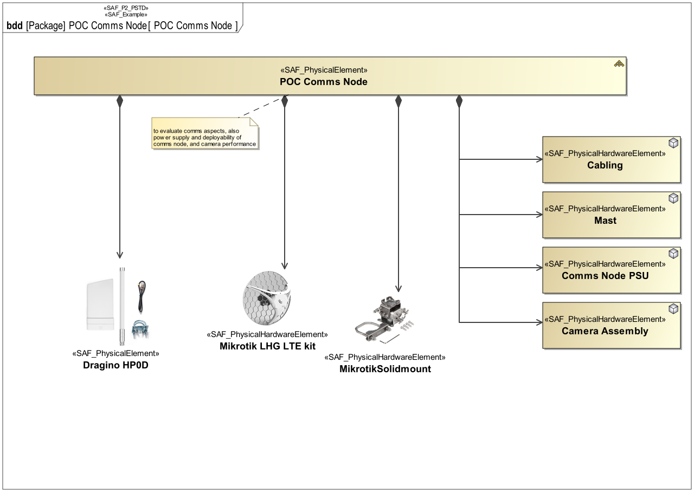
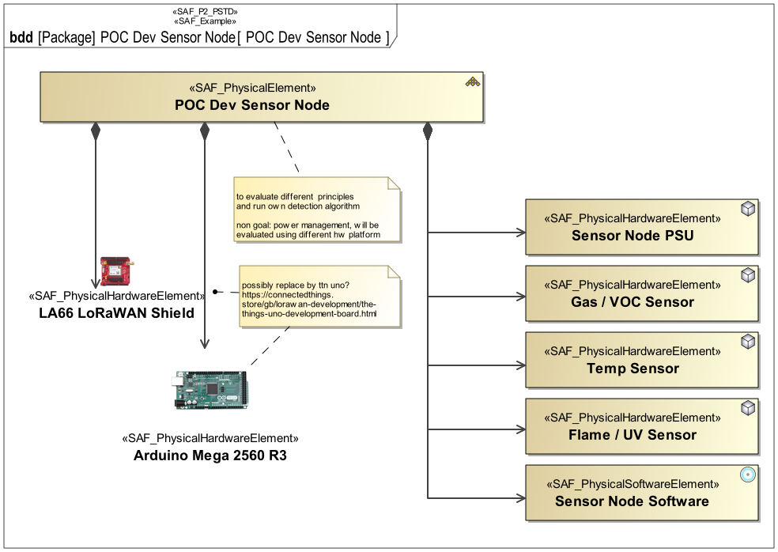
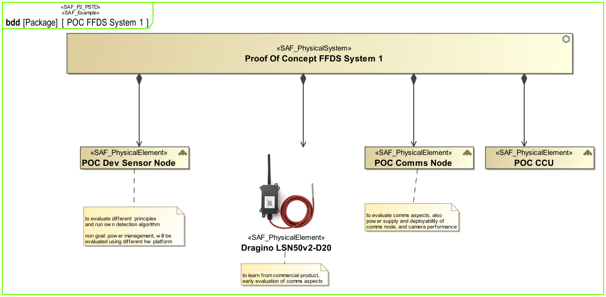
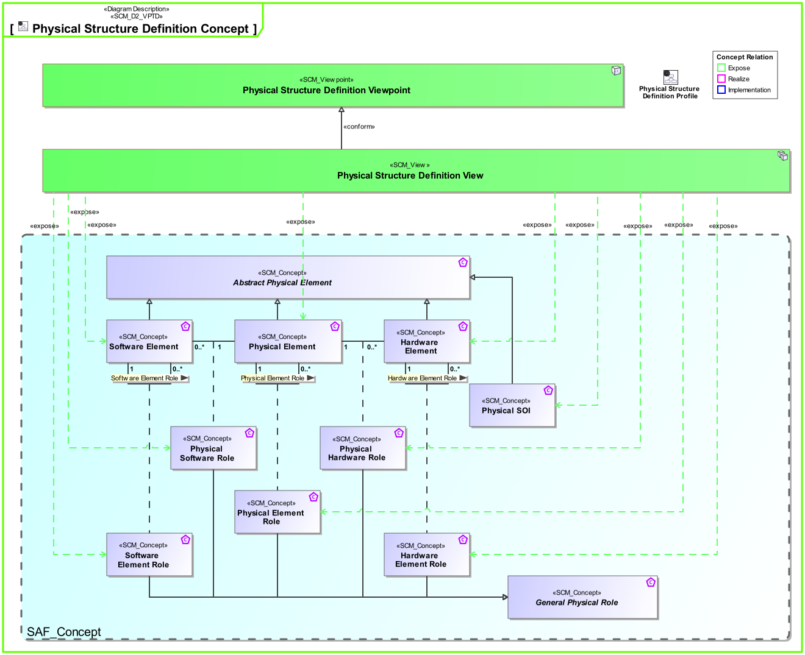
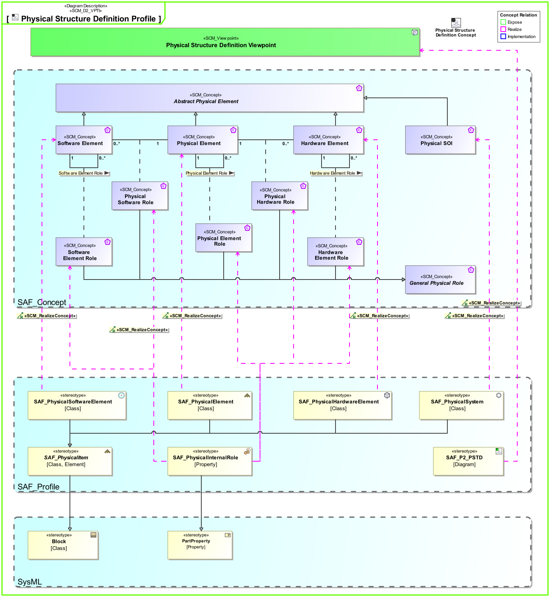

P2_PSTD Physical Structure Definition Viewpoint
| Domain | Aspect | Maturity |
|---|---|---|
| Physical | Taxonomy & Structure |




The Physical Structure Viewpoint is used to model the internal structure of the SOI and to identify the internal system elements making up the SOI. The SOI breakdown structure identifies system elements and finally at the implementation level hardware, software, and mechanics. The SOI breakdown structure determines items that are reused and make-or-buy (COTS) items. The Physical Structure Viewpoint is elaborated for each candidate physical SOI architecture. It provides the basis for further assessment of the architecture candidates by identifying the system elements in each candidate solution.
The Physical Structure Viewpoint supports the “Design Definition Process” activities of the INCOSE SYSTEMS ENGINEERING HANDBOOK 2023 [§2.3.5.5] and contributes to the artifact “System Design Description”.
Furthermore, the Physical Structure Viewpoint supports the “Allocation and Partitioning of Logical Entities to Physical Entities” activities of the INCOSE SYSTEMS ENGINEERING HANDBOOK 2015 [§4.4.2.7].
A block definition diagram (BDD) featuring the physical system block and physical blocks for any kind of physical element, HW or SW elements, the system is composed of. These elements are connected to the system block by means of aggregation relationships. Note: Multiple relationships to a kind of element are allowed meaning, that this kind of element is used in several roles.
The following Stereotypes / Model Elements are used in the Viewpoint:
The Diagram shows the concepts exposed by the viewpoint, and related concepts if necessary.

| Concept | Documentation |
|---|---|
| Physical SOI | Represents the Physical SOI on Physical Level. |
| Hardware Element Role | Specifies the fact that a hardware structure comprises hardware elements. |
| Hardware Element | Pure Hardware Elements. Similarity with the V-Model "hardware unit". |
| Physical Element Role | Specifies the fact that a physical structure comprises physical elements. |
| Physical Element | A composition of Hardware and Software Elements. Similarity with the V-Model segments and system. See [VXT]. |
| Physical Hardware Role | Specifies the fact that a physical structure comprises hardware elements. |
| Physical Software Role | Specifies the fact that a physical structure comprises software elements. |
| Software Element Role | Specifies the fact that a software structure comprises software elements. |
| Software Element | Pure Software Elements. Similarity with the V-Model "software unit". |
The Diagram shows the implementation of exposed concepts.
